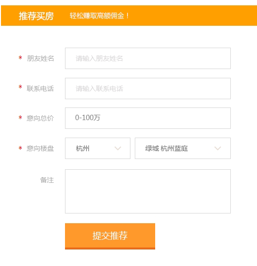

关于我们
简介
绿城在线置业是绿城房地产集团有限公司旗下网站，旨在为绿城客户提供更全面的房产品展示和更便捷的购房服务，为房产经纪人或意向成为房产经纪人的人群提供更广阔、灵活的销售平台。
绿城在线置业依托绿城房地产集团有限公司、绿城房产建设管理有限公司100多个房产项目、10余种物业类型及1100多名职业经纪人资源，为客户提供绿城房产品范畴内全方位的产品信息及咨询服务，二手房中介经纪服务，房屋租赁服务，旅游地产、商业地产、养老地产等资讯了解。
绿城在线置业因其开放式的产品销售信息共享模式，零门槛地为各类房产经纪人或意向成为房产经纪人的人群提供实现自我价值的平台，构筑覆盖全国的全民经纪人体系。
绿城
绿城房地产集团有限公司（以下简称绿城）是中国知名的住宅物业开发商之一，以优秀的房产品质量占据行业内的领先地位。绿城于1995年1月6日在浙江杭州注册成立，2006年7月13日，“绿城中国控股有限公司”在香港上市（股票代码：03900），绿城为其全资子公司。
历经20年的发展，绿城拥有100多家成员企业，5000多名员工， 以浙江省为主要基地，项目遍布浙江省内经济最发达的城市包括杭州市、宁波市、温州市、台州市、绍兴市以及省内的全国经济百强县市，业务规模庞大，并拥有广泛的知名度。伴随2000年开始的全国拓展战略，集团已经成功拓展至长三角其他重要城市（包括上海、南京、苏州、无锡及南通）、环渤海经济圈重要城市（包括北京、天津、青岛、济南及大连）以及其他省会城市（合肥、郑州、长沙及乌鲁木齐等），并取得了持续增长的经营业绩，在各地确立了优秀的品牌形象。从2004年开始，绿城连续荣获中国房地产企业品牌价值TOP10；自2005年开始连续荣获中国房地产企业综合实力TOP10。
愿景
我们的愿景：
为更多人提供好房子、好生活
我们的目标：
打造绿城产品销售、资讯、服务、技术一体化平台
提供志同道合者更多发展机会和成长通道我们的价值
绿城是一所以商业模式运行的公益企业，坚持讲道义、走正道，主动承担社会责任，引导社会文明的提升。始终以开发优质房产品为责任，以提升园区服务为价值，以对他人和对社会有益为宗旨，在实现企业持续健康发展的同时，不断为员工创造平台，为客户创造价值，为同道者创造机会，为社会创造文明、和谐、温馨、优雅的人居文化，为城市和历史留下值得典藏的建筑艺术精品。
注册常见问题
1、我没有收到手机验证码短信怎么办？
答：首先请确认输入的手机号码是否正确；其次验证码短信可能会有延迟现象，如果您等待一段时间后仍然没有得到验证码，请换一个时段再试试重新发送验证码。2、我输入正确的验证码但提示“验证码不正确”怎么办？
答：验证码有时效性，请重新获取验证码并尽快录入。3、我注册时提示“该用户已经注册”怎么办？
答：系统验证该手机号码已经注册过，请直接登录（http://121.199.41.245/user/login.htm）或找回密码后登录。（http://121.199.41.245/user/retrieve_password.htm）4、我不想输入手机号码，是否可以通过邮箱等其他方式注册？
答：网站注册时需通过手机验证后才能正式注册成会员。
绿城保障-品牌地产合作
- 融创绿城：
- 西溪融庄、杭州之江壹号、苏州御园、苏州桃花源、无锡玉兰花园、无锡蠡湖香樟园、常州玉兰广场、上海玉兰花园、上海玫瑰园、上海黄浦湾、上海玉兰花园臻园、上海盛世滨江、上海御园、上海香溢花城
- 九龙仓集团有限公司：萧山钱塘明月、大连桃源里
- 浙江西子房产集团：杭州田园牧歌、杭州西子国际、临安青山湖玫瑰园、杭州紫兰公寓、杭州锦兰公寓、新华园
- 赛丽地产：杭州丽园、杭州慧园
- 远洋地产：杭州远洋公馆
- 滨江集团：武林壹号
- 浙铁投资：杭州西溪诚园守纯苑、杭州翡翠城、上海长风中心、义乌玫瑰园、丽水秀丽春江
- 浙报传媒集团股份有限公司：西溪诚园正信苑、知敬苑
- 浙江省浙信房地产有限公司：杭州西溪诚园明礼苑、台州玉兰广场、紫薇花园
- 海南海航地产控股有限公司：杭州西溪诚园致诚苑
- 浙江金昌房地产集团有限公司：绍兴百合花园
- 浙江宝业房地产集团有限公司：绍兴玉园
- 浙江新湖集团股份有限公司：海宁百合新城
- 中国葛洲坝集团房地产公司：北京京杭广场
- 海尔集团：济南全运村
- 城投地产：鄂尔多斯诚园
绿城保障-专业服务团队
- 杭州绿城房地产经纪有限公司
- 杭州绿建合联房地产经纪有限公司
- 启东绿城香格房屋咨询有限公司
- 杭州绿城中胜房地产营销策划有限公司
- 唐山绿城房地产经纪有限公司
- 德清绿城房地产营销策划有限公司
- 杭州绿城桃花源房地产营销代理有限公司
- 乌鲁木齐市绿城格瑞房产经纪有限公司
- 临安绿城曼陀房地产营销服务公司
- 沈阳全运绿城置业销售咨询有限公司
- 新泰绿城房地产咨询有限公司
- 杭州绿城华旭房地产营销策划有限公司
- 郑州绿城房屋销售有限公司
- 舟山绿城房地产销售服务有限公司
- 慈溪绿城房产销售服务有限公司
- 岱山绿城蔚蓝海岸房地产销售服务有限公司
- 诸暨市绿城房地产营销咨询有限公司
- 温州绿城房地产营销策划有限公司
- 临安绿城房地产营销服务有限公司
- 长沙绿峰房地产销售有限公司
- 台州绿城房地产营销策划有限公司
- 台州绿城嘉苑房产经纪有限公司
- 台州浙能绿城房地产营销策划有限公司
- 台州绿城泰业房地产销售服务有限公司
经纪人说明
如果你热情大方、工作态度积极、踏实肯干；如果你擅长人际沟通交往，亲和力好，具备较强的观察力和应变能力；如果你对房地产行业有强烈的兴趣及基础专业知识，对房地产市场有较强的感知能力，对市场营销工作有较深刻的认知。那么欢迎你！你将成为一名优秀的社会经纪人！
社会经纪人兼职无底薪，须与绿城专业经纪公司签署签联合经纪人合约。在通过一定课程的培训及实操演练后，便可在日常生活中做个有心人，广交宾客、带领看房，为客户介绍项目信息，并最终促成客户下单成交。
经纪人常见问题
1. 如何成为绿城的社会经纪人
绿城有2家特别面向社会经纪人开放的经纪人公司：杭州绿城房地产经纪有限公司和杭州绿建合联房地产经纪有限公司。有决心、有毅力、有恒心成为绿城长期社会经纪人的朋友们，可与上述公司总经理赖劲松（电话：13325718397）、丁剑萍（电话：13588238338）联系。在通过沟通面试、签订合约、实操培训后可正式成为一名优秀的社会经纪人。
2. 社会经纪人有效客户判定
成交客户即为有效客户。由社会经纪人介绍并最终成交的客户，并在项目案场无电话登记、无现场到访、无专业经纪人对接的，方可判定为有效客户。
3. 社会经纪人客户保护期
由社会经纪人介绍至项目案场，后转由专业经纪人对接的客户，一般从客户登记日起的三个月内成交者均判定为有效客户。
如何推荐客户
您只需要在浏览本网站新房的同时，向您的亲友推荐购房意向，或者在注册后，直接在“经纪人”栏目中点击“推荐买房”进行推荐，即可完成推荐客户。当您推荐的客户最终达成购房成交时，您即可获得绿城发放的丰厚佣金。
专业建议：1.发现、寻找客户：对房地产市场有较强的专业知识并保持学习和积累，以热情的态度和积极的行动力在工作、生活中广交朋友，在沟通了解中获取客户购买意向、购买力等信息，将最适合的产品推荐给客户。
2.推荐项目、到访案场：通过电话介绍、陪同到访等方式将客户推荐至项目案场。建议与某位专业经纪人联手为客户提供更为详细的项目产品介绍。
3.协助成交：同时与客户及专业经纪人保持密切沟通，时刻把握客户购买心理动向。如项目有样板房、样板区，更可带领客户看房感受实景促进成交。
经纪人佣金报酬
根据项目产品销售难易程度、销售价格及项目公司股东方意见，每个项目所支付的社会经纪人佣金报酬不同。
佣金常见问题
1、 佣金点数
一般佣金提取点数基准为3.5‰。但因各项目产品销售难易程度、销售价格及项目公司股东方意见，每个项目所支付的社会经纪人佣金报酬各有不同。
2、 结佣方式
1） 一次性付款：于客户一次性付款款项到帐后一次性支付佣金；
2） 按揭：于客户首次付款后支付款项同等比例的佣金，于银行按揭款到账后支付按揭款同等比例的佣金。
3） 分期付款（不推荐）：于客户首次付款后支付款项同等比例的佣金，于客户分期付款最后一笔款项到账后支付其余款项同等比例的佣金。
3、 结佣时间
根据项目不同情况一般在客户有效成交的1-3个月后。
服务声明
版权声明
1、“绿城”为绿城所在公司及其关联公司的商标，受法律保护，任何人不得擅自使用。凡侵犯本公司版权等知识产权的，绿城将依法追究其相关法律责任。
2、对本网版权所有之内容，已经本网书面许可的单位或个人，在使用时必须注明“稿件来源：绿城在线置业”，违者本网将依法追究其相关法律责任。
3、转载或引用本网内容必须是以新闻性或资料性公共免费信息服务为目的的合理、善意使用，不得对本网内容原意进行曲解、修改，同时必须保留本网注明的“稿件来源”，并自负版权等法律责任。
4、除注明“来源：绿城在线置业”的内容外，本网以下内容亦不可任意转载：
A、本网所指向的非本网内容的相关链接内容；
B、已作出不得转载或未经许可不得转载声明的内容；
C、本网中特有的图形、标志、页面风格、编排方式、程序等；
D、本网中必须具有特别授权或具有注册用户资格方可知晓的内容；
E、其他法律不允许或本网认为不适合转载的内容。5、转载或引用本网内容不得进行如下活动：
A、损害本网、他人或其他社会群体利益的行为；
B、任何违反法律法规的行为。6、对于不当转载或引用本网内容而引起的纷争等或因纠纷等造成的任何损失，本网不承担相关法律责任。
7、对不遵守本声明的用户或其他违法、恶意使用本网内容者，本网保留追究其法律责任的权利。
8、本声明未涉及的问题请参见国家有关法律法规，当本声明与国家有关法律法规冲突时，以国家法律法规为准。
9、本网站相关声明版权及其修改权、更新权和最终解释权均属绿城在线置业所有。
隐私保护
隐私权是用户的重要权利，对于绿城在线置业的所有用户，我们均会以负责的态度对待您的个人信息，特此制定绿城在线置业对用户相关信息所采取的收集、使用和保护政策。绿城在线置业隐私保护声明系本网站保护用户个人隐私的公告和承诺，请您务必仔细阅读
一、用户非个人信息
我们将通过您的IP地址来收集非个人化的信息，例如用户的浏览器性质、操作系统种类、给您提供接入服务的ISP域名、您访问本网的顺序和链接途径、您访问时所在的地理位置等。通过收集上述信息，我们将优化在您计算机屏幕上显示的页面，同时进行客流量统计、访问者阅读习惯整理等，从而改进本网站的管理和服务。这些无关个人身份的信息能帮助我们识别绿城在线置业最受欢迎的地区和内容等，并帮助我们确定推广活动的有效性。此外，我们也可能将这些信息披露给我们的广告客户，使他们知道点击他们广告的效果数据。
二、用户个人信息
1、当您在绿城在线置业进行用户注册登记等各种活动时，在您的同意并确认下，本网站将通过注册表格等形式要求您提供一些个人信息。这些个人信息包括：
（1）个人识别资料：如姓名、性别、年龄、出生日期、身份证号码（或护照号码）、座机/手机、通信地址、住址、电子邮件地址等信息。
（2）个人背景：职业、教育程度、收入状况、婚姻状况、家庭状况、兴趣爱好等。2、请了解，在未经您同意并确认之前，本网站不会将您提供的信息用于其它目的。应政府及法律相关要求披露时不在此限。绿城在线置业的目标是向所有用户提供愉快、有益的上网经历，并使每个用户使用绿城在线置业相关服务时能够更容易、更满意，而收集这些个人信息有助于我们实现这一目标。
三、用户权利
1、本网站用户对于自己的个人信息享有以下权利：
（1）随时查询及请求阅览；
（2）随时请求补充或更正；
（3）随时请求删除；
（4）请求停止电脑处理及使用。2、针对以上权利，本网站为您提供相关服务，如用户有任何建议或意见，请联系我们
四、用户信息安全保护
1、本网站将严格保护您的个人信息安全，对您所提供的信息采取严密的管理及保护措施。我们将采用相应的安全技术和程序来防止您的个人信息丢失、被盗用或遭篡改，并且保护您的个人信息不被未经授权者访问、使用或泄漏。
2、本网站将在必要时委托专业技术人员代为对该类资料进行电脑处理，以符合专业分工之需求。如本网站将电脑处理之通知送达予您，而您未在通知规定的时间内主动明示反对，本网站将善意推定您已同意。
五、未成年人隐私权的保护
1、本网站将建立相应合理程序，以保护未成年人个人信息的安全。本网站郑重声明：任何十六岁以下的未成年人参加网上活动应事先得到家长或其法定监护人（以下统称为“监护人”）的明确同意。
2、未经监护人同意，未成年人私自上网或者冒用成人名义上网的行为将可能缺乏与未成年人相应的信息安全保护措施。
3、监护人应承担保护未成年人相关网络隐私的首要责任。
4、本网站收集未成年人的个人信息，仅为更好服务于未成人特定要求的目的，相关资料仅作为保护未成年人参与网络活动时的安全之用，而不会保留这些信息做进一步或其他商业目的的使用。
5、未经监护人同意，本网站将不会使用未成年人的个人信息，亦不会向任何第三方披露或传送可识别该未成人的个人信息。定应政府及法律相关要求披露时不在此限。
6、若经未成年人的监护人同意，本网站可对未成年人的个人信息进行收集，本网站将向监护人提供：
（1）审视其子女或被监护人相关信息的机会；
（2）拒绝其子女或被监护人相关个人信息被进一步收集或使用的可能；
（3）变更或删除其子女或被监护人个人信息。7、监护人有权拒绝本网站与其子女或被监护人做进一步的联络。
六、用户信息使用原则只在符合下列条件之一的情况下，本网站方可能对本网用户的个人信息进行必要范围之外的合理使用：
1、已取得您的书面同意；
2、为免除您在生命、身体或财产方面的紧急危险；
3、为防止他人权益的重大危害；
4、为增进公共利益，且无害于您的重大利益。
七、用户信息披露原则
1、根据中华人民共和国相关法律法规，当相关政府机关依照法定程序要求本网站披露相关个人信息时，本网站将根据执法单位之要求或为公共安全之目的提供相关资料。在此情况下对用户信息的任何披露，本网站均不承担任何责任。
2、其他绿城在线置业因善意确信或合理原因有必要对相关用户信息进行披露的情形：
（1）根据绿城在线置业服务协议或绿城其他相关声明所列的条款，有必要进行相关信息公开的；
（2）在紧急的情况下，为保护绿城公司及绿城在线置业用户的人身或财产安全的；
（3）为体现公平公正原则，需要对用户的部分信息进行公示的。八、Cookies
1、Cookies是指一种技术，当使用者访问设有Cookies装置的本网站时，本网站的服务器会自动发送Cookies至用户浏览器内，并储存到其电脑硬盘内。此Cookies负责记录日后您到访本网站的种种活动、网络个人资料、浏览习惯等。
2、绿城在线置业使用cookies仅为为所有用户提供更加周到的个性化服务之目的。运用Cookies技术，本网站能够知道哪些网页或内容受欢迎。此外，本网站将会运用Cookies追访您的喜好，使您在访问我们的网站时能够得到更周密更细致的良好服务。
3、cookies不会跟踪个人信息。当您注册成为我们网站会员时，绿城在线置业会使用cookies。在这种情况下，会存储有用信息，使您再次访问我们的网站时可辨认您的身份，从而向您提供感兴趣的信息资料或储存账号密码等，以便您造访本网站时不必每次重复登录。
4、来自绿城在线置业的cookies只能被绿城在线置业读取。您可以选择接受或拒绝 Cookie。大多数网络浏览器会自动接受 Cookie，但您通常可根据自己的需要来修改浏览器的设置以拒绝 Cookie。如果您的浏览器被设置为拒绝cookies，您仍然能够访问我们的大多数网页，但是您可能无法完全体验绿城在线置业全部的网络服务或本网站的特色互动功能。
九、免责 下列情况本网站亦毋需承担任何责任：
1、由于您将用户密码告知他人或与他人共享注册帐户，由此导致的任何个人信息泄露，或其他非因绿城在线置业原因导致的个人信息泄漏；
2、任何由于黑客政击、计算机病毒侵入或发作、因政府管制而造成的暂时性关闭等影响网络正常经营之非绿城在线置业原因而造成的个人信息泄露、丢失、被盗用或被篡改等；
3、任何第三方根据绿城在线置业各服务声明及服务协议中所列明的情况使用您的个人信息，由此所产生的纠纷；
4、绿城在线置业在各服务声明及服务协议中列明的所有免责情形；
5、绿城在线置业的网页上有与其他网站网页的链接。绿城在线置业对其他任何网站的内容、隐私政策、运营情况、或经营这些网站的公司的行为概不负责。在向这些与绿城在线置业链接的网站提供个人信息之前，请查阅它们的隐私政策。由于与本网站链接的其它网站所造成的个人信息泄露及由此而导致的任何法律争议和后果，绿城在线置业概不负责；
6、任何因不可抗力所导致的后果。
十、相关法律
本声明未涉及的问题请参见国家有关法律法规，当本声明与国家有关法律法规冲突时，以国家法律法规为准。
十一、本网站相关声明版权及其修改权、更新权和最终解释权均属绿城在线置业所有。
免责声明
1、一切网民在进入绿城在线置业主页及各层页面时均被视为已经仔细看过本条款并完全同意。凡以任何方式登陆本网站，或直接、间接使用本网站资料者，均被视为自愿接受本网站相关声明和用户服务协议的约束。
2、用户明确并同意其使用绿城在线置业网络服务所存在的风险将完全由其本人承担；因其使用绿城在线置业网络服务而产生的一切后果也由其本人承担，绿城在线置业对此不承担任何责任。
3、除绿城在线置业注明之服务条款外，其它因不当使用本网而导致的任何意外、疏忽、合约毁坏、诽谤、版权或其他知识产权侵犯及其所造成的任何损失（包括因不当下载而感染电脑病毒等），绿城在线置业概不负责，亦不承担任何法律责任。
4、对于因不可抗力或因黑客攻击、通讯线路中断等绿城在线置业不能控制的原因造成的网络服务中断或其他缺陷，导致用户不能正常使用绿城在线置业网，绿城在线置业不承担任何责任，但将尽力减少因此给用户造成的损失或影响。
5、本声明未涉及的问题请参见国家有关法律法规，当本声明与国家有关法律法规冲突时，以国家法律法规为准。
6、本网站相关声明版权及其修改权、更新权和最终解释权均属绿城在线置业
服务协议
1、协议生效条件
绿城在线置业的各项服务的所有权和运作权归绿城房地产集团有限公司。绿城在线置业提供的服务将完全按照其发布的章程、服务条款和操作规则严格执行。用户完全完成注册程序，便成为绿城在线置业的注册用户，将得到一个密码和帐号，同时此协议即时生效。用户有义务保证密码和帐号的安全。用户对利用该密码和帐号所进行的一切活动负全部责任；因此所衍生的任何损失或损害，绿城在线置业无法也不承担任何责任。
2、注册义务
绿城在线置业运用自己的操作系统通过国际互联网为用户提供网络服务。同时，用户必须：
(1) 自行配备上网的所需设备，包括个人电脑、调制解调器或其他必备上网装置；
(2) 自行负担个人上网所支付的与此服务有关的电话费用、网络费用。
为了能使用本服务，您同意以下事项：
(1) 依本服务注册表的提示提供您本人真实、正确、最新及完整的资料；
(2) 维持更新您个人用户信息，确保其真实、正确、最新及完整。若您提供任何错误、不实、过时或不完整的资料，并为绿城所确知，或者绿城在线置业有合理的理由怀疑前述资料为错误、不实、过时或不完整，绿城在线置业有权暂停或终止您的帐号，并拒绝您于现在和未来使用绿城全部或部分的服务。
(3) 您注册的用户名不能侵犯他人合法权益，不能对他人名誉权造成侵犯。绿城有权收回对绿城或者他人合法权益有侵犯嫌疑的帐号。3、隐私制度
尊重用户个人隐私是绿城在线置业的一项基本政策。所以，绿城在线置业不会在未经合法用户授权时，公开、编辑或透露其个人信息及保存在绿城在线置业中的非公开内容，除非有下列情况：
(1) 有关法律规定和程序，绿城在线置业合法服务程序规定；
(2) 保持维护绿城在线置业的商标所有权和其他合法权益；
(3) 在紧急情况下竭力维护用户个人和社会大众的隐私安全；
(4) 与绿城在线置业的关联公司和战略合作伙伴分享客户资料，以及其他需要公开、编辑或透露个人信息的情况。4、用户信息的存储与限制
绿城在线置业不对用户所发布信息的删除或储存失败负责。绿城并不承诺对用户的存储信息进行无限期保留。除非本协议中另有规定，否则绿城在线置业不保证服务一定会满足用户的使用要求，也不保证服务不会受中断，对服务的及时性、安全性、准确性也不作担保。绿城在线置业有判定用户的行为是否符合绿城在线置业服务条款的要求和精神的保留权利，如果用户违背了服务条款的规定，绿城在线置业有中断对其提供网络服务的权利。绿城在线置业运用自己的操作系统通过国际互联网向用户提供丰富的网上资源，包括各种信息工具、网上论坛、个性化内容等。除非另有明确规定，增强或强化目前服务的任何新功能，包括新产品、栏目，均无条件地适用本服务条款。
5、服务条款的修改
绿城在线置业有权在必要时修改服务条款。绿城在线置业服务条款一旦发生变动，将会在重要页面上提示所修改的内容。如果不同意所改动的内容，用户可以主动取消获得的网络服务。如果用户继续享用网络服务，则视为接受服务条款的变动。绿城在线置业保留随时修改或中断服务而不需照知用户的权利。绿城在线置业行使修改或中断服务的权利，不需对用户或第三方负责。
6、拒绝提供担保
用户对网络服务的使用承担风险。绿城在线置业对此不作任何类型的担保，不论是明确的或隐含的，但是不对商业性的隐含担保、特定目的和不违反规定的适当担保作限制。
7、有限责任
绿城在线置业对任何直接、间接、偶然、特殊及继起的损害不负责任，这些损害可能来自：不正当使用网络服务，在网上购买商品或进行同类型服务，在网上进行交易，非法使用网络服务或用户传送的信息有所变动。
8、服务的结束
用户或绿城在线置业可随时根据实际情况中断一项或多项网络服务。绿城在线置业不需对任何个人或第三方负责而随时中断服务。用户对后来的条款修改有异议，或对绿城在线置业的服务不满，可以行使如下权利：
(1) 停止使用绿城在线置业的网络服务；
(2) 通告绿城在线置业停止对该用户的服务。结束用户服务后，用户使用网络服务的权利马上中止。从那时起，用户没有权利，绿城在线置业也没有义务传送任何未处理的信息或未完成的服务给用户或第三方。9、用户管理
用户单独承担发布内容的责任。用户对服务的使用是根据所有适用于绿城在线置业的国家法律、地方法律和国际法律标准的。
用户必须遵循：
(1) 从中国境内向外传输技术性资料时必须符合中国有关法规；
(2) 使用网络服务不作非法用途；
(3) 不干扰或混乱网络服务；
(4) 遵守所有使用网络服务的网络协议、规定、程序和惯例。
(5) 用户的密码和帐号遭到未授权的使用或发生其他任何安全问题，用户可以立即通知绿城在线置业，并且用户在每次连线结束，应结束帐号使用，否则用户可能得不到绿城在线置业的安全保护。
绿城在线置业有权利在下述情况下，对内容进行保存或披露：
(1) 法律程序所规定；
(2) 本服务条款规定；
(3) 被侵害的第三人提出权利主张；
(4) 为保护绿城在线置业、其使用者及社会公众的权利、财产或人身安全；
(5) 其他绿城在线置业认为有必要的情况。10、关于手机服务
(1) 绿城在线置业为用户提供绿城在线置业手机短信服务。一旦用户在注册本服务的过程输入自己的手机号码和保护码并完成登记注册程序，则表明用户愿意接受绿城在线置业发送的短信，此服务为免信息费服务，绿城在线置业不向用户收取任何费用，用户主动发送的短信产生的费用，由用户向移动运营商支付，与绿城在线置业无关。
(2) 绿城在线置业为用户提供手机上网服务，绿城在线置业不收取用户任何费用，用户上网产生可能产生的流量费，由用户向运营商支付，与绿城在线置业无关。
(3) 绿城在线置业不承担用户由于手机故障、欠费、丢失、借用或盗用后他人利用手机订购绿城在线置业短信息服务而遭受的损失或并非由于绿城在线置业的原因而导致的任何其它损失。对于用户出国并使用国际漫游服务但未取消已定制的短信息服务，或者在国际漫游状态下继续使用短信息点播服务，用户应当承担相关所有费用，绿城在线置业不承担任何责任。
(4) 用户自己承担系统受损或资料丢失的所有风险和责任。绿城在线置业对于删除和存储数据失败并不负有任何责任。
(5) 如因绿城在线置业的过错，导致用户接收到错误的信息并支付了不应支付的信息费，绿城在线置业的全部责任仅限于赔偿用户因错误信息而支付的信息费。11、关于链接
本服务可能会提供与其他国际互联网网站或资源进行链接。对于前述网站或资源是否可以利用，绿城在线置业不予担保。因使用或依赖上述网站或资源所产生的损失或损害，绿城在线置业也不承担任何责任。
12、绿城在线置业的知识产权及其他权利
绿城在线置业对本服务及本服务所使用的软件和受知识产权或其他法律保护的资料享有相应的权利；
经由本服务传送的资讯及内容，受到著作权法、商标法、专利法或其他法律的保护；未经绿城在线置业明示授权许可，用户不得进行修改、出租、散布或衍生其他作品。13、免责声明
绿城在线置业对于本服务包含的或用户经由或从任何与本服务有关的途径所获得的任何内容、信息或广告，不声明或保证其正确性或可靠性；并且对于用户经本服务上的广告、展示而购买、取得的任何产品、信息或资料，绿城在线置业不负保证责任。用户自行承担担使用本服务的风险。
(1) 绿城在线置业有权但无义务，改善或更正本服务任何部分之任何疏漏、错误。
(2) 绿城在线置业不保证以下事项（包括但不限于）：
1) 本服务适合用户的使用要求；
2) 本服务不受干扰，及时、安全、可靠或不出现错误；
3) 用户经由本服务取得的任何产品、服务或其他材料符合用户的期望；
4) 用户使用经由本服务下载的或取得的任何资料，其风险自行负担；因该使用而导致用户电脑系统损坏或资料流失，用户应负完全责任；
5) 服务使用或无法使用；
6) 经由本服务购买或取得的任何产品、资料或服务；
7) 用户资料遭到未授权的使用或修改；
8) 其他与本服务相关的事宜。14、法律
网络服务条款要与中华人民共和国的法律解释相一致，用户和绿城在线置业一致同意服从高等法院所管辖。如发生绿城在线置业服务条款与中华人民共和国法律相抵触时，则这些条款将完全按法律规定重新解释，而其它条款则依旧保持对用户产生法律效力和影响。
在任何情况下，绿城在线置业用户不得利用绿城在线置业进行违反或可能违反国家法律和法规的言论或行为，否则，绿城可在任何时候不经任何事先通知终止向您提供服务。并且用户对自己的言论或行为负责。
用户应遵守以下法律及法规：
(1) 用户同意遵守《中华人民共和国保守国家秘密法》、《中华人民共和国计算机信息系统安全保护条例》、《计算机软件保护条例》、信息产业部2000年10月8日第4次部务会议通过的《互联网电子公告服务管理规定》，以及《互联网新闻信息服务管理规定》等有关计算机及互联网规定的法律和法规、实施办法。在任何情况下，绿城合理地认为用户的行为可能违反上述法律、法规，绿城可以在任何时候，不经事先通知终止向该用户提供服务。
(2) 用户应了解国际互联网的无国界性，应特别注意遵守当地所有有关的法律和法规。
网站地图
人才招聘
友情链接
绿城发展 http://dep.chinagreentown.com/
绿城设计GAD http://www.gad.com.cn/
绿城东方设计GOA http://www.goa.com.cn/
绿城装饰 http://www.greentowndec.com/
绿城健康 http://www.greentownlife.com/
绿城物业服务 http://www.zjlcwg.com/Htm/index.html
绿城教育 http://www.greentowneducation.com/
绿城医院 http://www.greentownhospital.com/
绿城口腔医院 http://www.lckq.cn/
联系我们
绿城房地产集团有限公司
地址：杭州市杭大路1号黄龙世纪广场A区十楼
电话：0571－88988888
传真：0571－87901717
邮编：310007
集团销售展示中心
地址：杭州市杭大路1号黄龙世纪广场B区一楼
电话：0571－87901818
绿城会
地址：杭州市杭大路1号黄龙世纪广场B区一楼
电话：0571－87902055
本体建设部（人力资源）
地址：杭州市杭大路1号黄龙世纪广场A区九楼
电话：0571－87957424
媒体联系
地址：杭州市杭大路1号黄龙世纪广场A区七楼
电话：0571－87901886
投资者关系部
地址：杭州市杭大路1号黄龙世纪广场A区十楼
电话：0571－87902676、87902207
客户服务部
地址：杭州市杭大路1号黄龙世纪广场C区二楼
绿城24小时客户服务热线：400－111－3900
绿城电商（物资采供）
地址：杭州市滨江区秋溢路289号绿城电商体验馆A区七楼
电话：0571－85821888
商务调查部
地址：杭州市杭大路1号黄龙世纪广场A区十楼
电话：0571－87903911